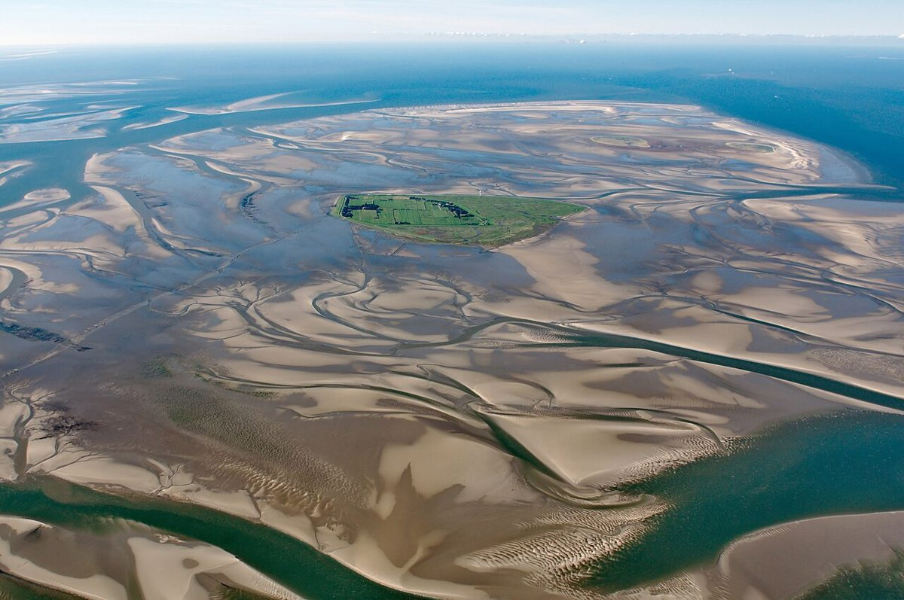

Le Wattenmeer de la mer du Nord : un joyau naturel allemand à découvrir

Entre terre et mer, le Wattenmeer de la mer du Nord est un paysage fascinant, classé au patrimoine mondial de l'UNESCO. Cette étendue de vasières et de bancs de sable, unique au monde, s'étend le long des côtes allemandes. Voici tout ce qu'il faut savoir pour visiter ce joyau naturel.
Un écosystème extraordinaire
Le Wattenmeer est le plus grand écosystème de vasières et marais salés au monde. À marée basse, la mer se retire sur des kilomètres, laissant apparaître un paysage lunaire où vivent des milliers d'espèces : vers marins, crevettes, crabes, et des millions d'oiseaux migrateurs qui viennent s'y nourrir.
Comment s'y rendre
Le Wattenmeer allemand s'étend le long de la Basse-Saxe, du Schleswig-Holstein et de la ville de Hambourg. Les principales portes d'entrée sont :
- Cuxhaven (accessible en train depuis Hambourg)
- Husum (charmante ville portuaire)
- Les îles comme Sylt ou Norderney (accessibles en ferry)
Quand visiter
La meilleure période :
- Avril à octobre pour des températures agréables
- Juin-août pour les vacances scolaires (mais plus de monde)
- Printemps et automne pour l'observation des oiseaux migrateurs
Éviter les mois d'hiver très venteux et froids.
3 expériences incontournables
1. Marche guidée sur les vasières
Accompagné d'un guide expérimenté, vous marcherez pieds nus sur le fond de la mer à marée basse à la découverte des habitants de ce milieu unique. Une expérience magique (attention à bien suivre les consignes de sécurité).
2. Observation des phoques
Plusieurs compagnies proposent des excursions en bateau pour observer les colonies de phoques autour des îles comme Amrum ou Hallig Hooge.
3. Coucher de soleil sur les vasières
Depuis la digue de Dangast ou sur l'île de Pellworm, admirez les jeux de lumière sur ce paysage plat à perte de vue qui semble flotter entre ciel et mer.
Gastronomie locale
Goûtez aux spécialités maritimes :
- Le crab gris (granat) en soupe ou sandwich
- Les huîtres de la baie de Jade
- La salicorne, légume des marais salants
- Le labskaus (plat à base de viande et betterave)
- Le knieper, petit crabe local
Terminez par un thé frison, servi avec de la crème et du sucre candi, tradition dans toute la région.
Conseils pratiques
- Prévoir des chaussures qui tiennent bien aux pieds pour marcher dans la vase
- Vérifier systématiquement les horaires des marées avant toute excursion
- Emporter des vêtements chauds même en été (vent fréquent)
- Respecter strictement les zones protégées pour préserver cet écosystème fragile
Le Wattenmeer offre une expérience nature incomparable, loin des foules des grandes villes touristiques. Un lieu idéal pour se reconnecter avec les rythmes de la nature et découvrir un paysage qui se transforme au rythme des marées.
Haiktec
- Guide Pratique pour Enseignants: 7 Stratégies Simples pour Gagner du Temps et Améliorer Vos Cours
- Planificateur de Chantier & Suivi Budgétaire pour Artisans
- Histoires Magiques pour le Dodo : 7 Contes Enchantés pour les Petits Explorateurs de 3 à 8 Ans
Text mit KI erstellt und automatisch geprueft.